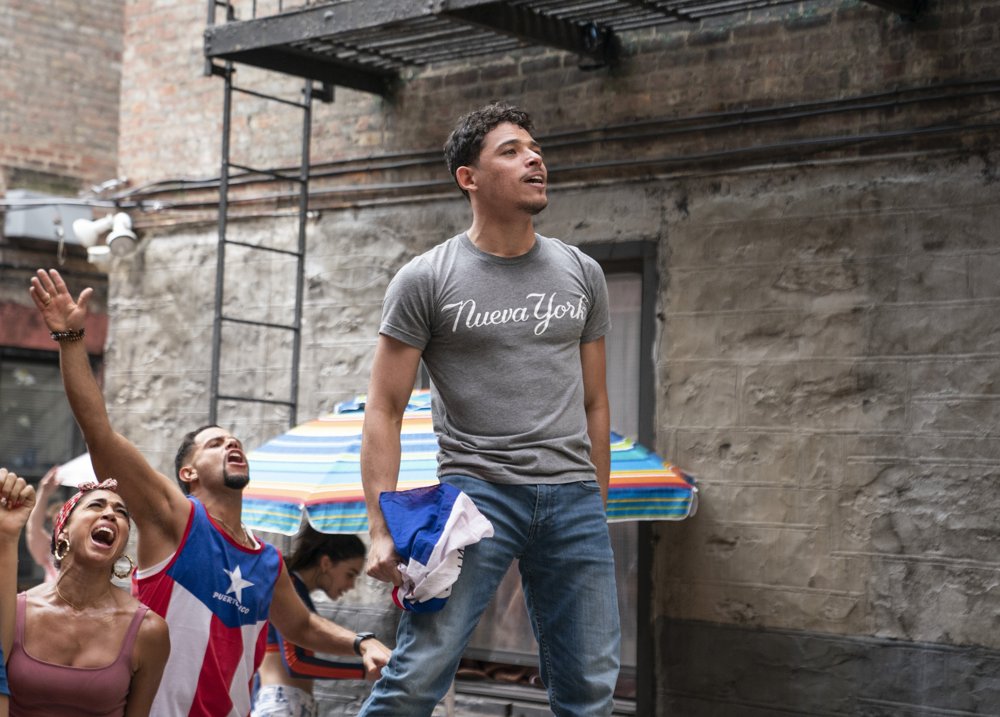

Courtyard Blackout • Piragua Guy Sparks the Flame
0:00
Featured Duo
Heart of the Barrio
Lin-Manuel Miranda (2008 / 2021)

Usnavi
Anthony Ramos
Vanessa
Melissa Barrera
Polyrhythms & Güiro
Listen to the crisp scrape of the güiro and conga polyrhythms backing the energetic salsa groove.
Flags & Heritage Pride
Watch how neighbors wave their flags (Puerto Rico, Dominican Republic, Cuba, Mexico) to celebrate identity.
Call-and-Response
Notice how Daniela shouts lines to the crowd, and the whole courtyard answers back in powerful unison.